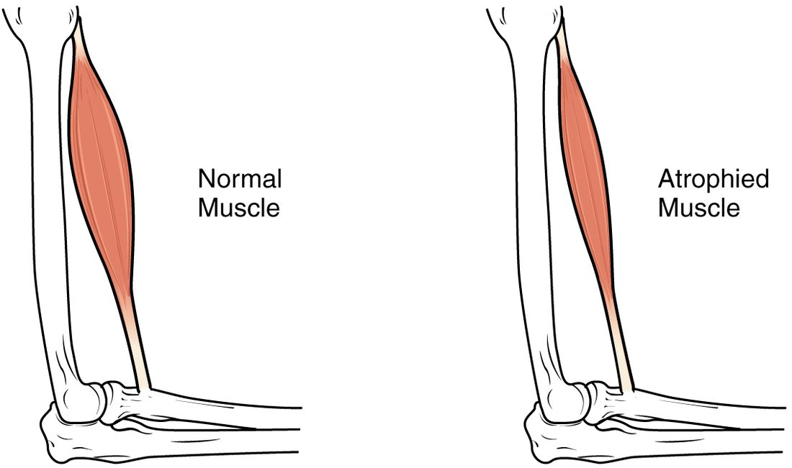

Muscle fiber types and exercise
1Why this matters
Mr. Alvarez, 78, spent ten days in the hospital with a lung infection. Before, he walked to the store every day. Now he needs both arms to push up from a chair, and his physical therapist worries he will fall. His muscles have shrunk from disuse on top of years of age-related loss. Whether he regains his strength depends on what kinds of fibers his muscles hold and how they respond to being used again.
2What this builds on
3Quick check before you start
1. Which protein stores oxygen inside muscle fibers and gives them a red color?
- Myoglobin
- Creatine kinase
- Troponin
Show the answer
Myoglobin is a red, iron-containing protein that binds oxygen in the cytosol of muscle fibers and releases it when oxygen in the fiber falls.
- Correct: Myoglobin:
- Creatine kinase:
- Troponin:
2. How many ATP does anaerobic glycolysis make per glucose, compared with aerobic respiration?
- 2 compared with about 30–32
- About 30–32 compared with 2
- The same number, but faster
Show the answer
Anaerobic glycolysis nets 2 ATP per glucose, fast but wasteful. Aerobic respiration yields about 30–32 per glucose but needs oxygen and delivers ATP more slowly.
- Correct: 2 compared with about 30–32:
- About 30–32 compared with 2:
- The same number, but faster:
3. What is a stem cell?
- An unspecialized cell that can divide and give rise to specialized cells
- A mature cell that has stopped dividing
- A cell that has lost its nucleus
Show the answer
Stem cells are unspecialized cells that divide to renew themselves and produce daughter cells that differentiate into specialized cells.
- Correct: An unspecialized cell that can divide and give rise to specialized cells:
- A mature cell that has stopped dividing:
- A cell that has lost its nucleus:
4Anatomy

With labels hidden, select a box to reveal its label.
5How it works, step by step
- A person starts regular endurance running, and their leg fibers repeatedly work hard with limited oxygen.The fibers build more mitochondria and myoglobin, and fast glycolytic fibers shift toward fast oxidative ones.
- Low oxygen and fast blood flow in the working muscle make fibers and capillary lining cells release VEGF.Endothelial cells of existing capillaries divide and sprout new capillaries: angiogenesis.
- More capillaries surround each fiber.Oxygen's diffusion distance to the mitochondria shortens, and more oxygen reaches each fiber per minute.
- More oxygen reaches fibers that now have more mitochondria.More ATP comes from aerobic respiration at any pace, less from glycolysis, so the runner makes less lactate and can keep going longer.
6Core concepts
7A common mistake
The wrong idea: Muscles grow by making new fibers, and training can turn slow-twitch fibers into fast-twitch ones (or the reverse) at will.
What actually happens: Adult skeletal muscle grows almost entirely by hypertrophy: existing fibers add myofibrils, and muscle stem cells fuse with them to add nuclei. The ratio of slow to fast fibers is largely inherited; training mostly changes what each fiber is like, such as its size, mitochondria and capillaries, and shifts fibers within the fast types.
8Check yourself
Anything you miss goes into your review queue.
1. In a biopsy, a technician counts 90 slow oxidative, 70 fast oxidative and 40 fast glycolytic fibers. What percentage of the fibers are slow-twitch?
- 35%
- 45%
- 55%
- 80%
Show the answer
Total = 90 + 70 + 40 = 200. Only slow oxidative fibers are slow-twitch: 90 ÷ 200 = 0.45, or 45%.
- 35%: 35% is 70 ÷ 200, the fast oxidative fibers, which are fast-twitch.
- Correct: 45%: Correct. 90 ÷ 200 = 45%.
- 55%: 55% is the fast-twitch share: (70 + 40) ÷ 200.
- 80%: 80% adds slow oxidative and fast oxidative fibers ((90 + 70) ÷ 200). Fast oxidative fibers are fast-twitch.
2. Slow oxidative fibers are thinner than fast glycolytic fibers. How does their small diameter suit their metabolism?
- A thin fiber holds more glycogen per unit of its volume
- A thin fiber contracts faster than a thick one
- Oxygen has less distance to diffuse
- A thin fiber needs no myoglobin
Show the answer
Oxidative fibers depend on oxygen arriving from capillaries around them. A small diameter keeps every mitochondrion close to the surface, so the diffusion distance for oxygen is short. A glycolytic fiber does not wait for oxygen, so it can be thick and hold many myofibrils.
- A thin fiber holds more glycogen per unit of its volume: Slow oxidative fibers actually have low glycogen stores; the glycogen-rich fibers are the thick, glycolytic ones.
- A thin fiber contracts faster than a thick one: Contraction speed depends on the myosin version and calcium handling, not on diameter. Slow oxidative fibers are thin and slow.
- Correct: Oxygen has less distance to diffuse: Correct. Short diffusion distance supports aerobic metabolism.
- A thin fiber needs no myoglobin: Slow oxidative fibers have the most myoglobin of all.
3. A runner who has been running at marathon pace starts an all-out sprint for the finish line. Predict the change in each variable in her leg muscles during the sprint.
| Variable | Change |
|---|---|
| Recruitment of fast glycolytic fibers | — |
| Rate of anaerobic glycolysis | — |
| Lactate production | — |
| Share of ATP from aerobic respiration | — |
| How long she can keep this pace | — |
Show the answer
At marathon pace, small motor units of slow oxidative fibers do most of the work aerobically. A sprint recruits the large, fast glycolytic units too, which make ATP fast by glycolysis, produce lactate and tire quickly, so the burst cannot last.
- Recruitment of fast glycolytic fibers: up. By the size principle, the largest motor units, made of fast glycolytic fibers, join only when near-maximal force is needed.
- Rate of anaerobic glycolysis: up. Fast glycolytic fibers make their ATP mainly by glycolysis, and every working fiber's ATP demand rises steeply.
- Lactate production: up. Glycolysis makes pyruvate faster than the mitochondria can take it in, so pyruvate is converted to lactate.
- Share of ATP from aerobic respiration: down. Aerobic respiration keeps running, but glycolysis now supplies a much larger share of the far greater total.
- How long she can keep this pace: down. Fast glycolytic fibers fatigue within a minute or two as glycogen falls and phosphate builds up.
4. After a year of heavy weight training, Ms. Tran's thigh muscles are much larger. What mainly accounts for the growth?
- Existing fibers dividing into two
- Existing fibers adding myofibrils
- Fat building up between the fibers
- Tendons lengthening to make room for more fibers
Show the answer
This is hypertrophy: existing fibers make more actin and myosin and add myofibrils, so each fiber's diameter grows. Muscle stem cells fuse with the fibers and add nuclei to support the extra protein.
- Existing fibers dividing into two: Mature skeletal muscle fibers never divide, and hyperplasia adds few if any fibers in adult humans.
- Correct: Existing fibers adding myofibrils: Correct. Hypertrophy of existing fibers.
- Fat building up between the fibers: Training builds muscle protein, not fat. Fat replacing fibers happens in diseases such as muscular dystrophy.
- Tendons lengthening to make room for more fibers: Tendons do not grow to hold new fibers; fiber number stays about the same.
5. A deep cut severs the nerve to a man's forearm muscles, and the axons do not regrow. Compared with a forearm kept in a cast for the same time, how will his muscles change?
- Milder atrophy than in the cast
- About the same atrophy as in the cast
- Hypertrophy as the fibers contract on their own
- Worse atrophy, ending in replacement by fat and scar
Show the answer
In a cast, motor neurons still fire and fibers still get some activity and nerve contact. With the nerve cut, the fibers receive no action potentials at all. They atrophy severely, and over months to years, without reinnervation, they are replaced by fat and connective tissue.
- Milder atrophy than in the cast: Loss of the nerve causes more atrophy, not less; lack of strain is not protective here.
- About the same atrophy as in the cast: Denervated muscle loses much more than muscle that keeps its motor neurons.
- Hypertrophy as the fibers contract on their own: Skeletal muscle fibers contract only when their motor neuron fires; cut off, they cannot drive their own growth.
- Correct: Worse atrophy, ending in replacement by fat and scar: Correct. Denervation atrophy is severe and, without regrowth of the axons, permanent.
6. A 4-year-old boy has trouble climbing stairs and pushes on his thighs with his hands to stand up. His calves look large and his blood creatine kinase is very high. What best explains the large calves?
- Hypertrophy of normal fibers compensating for weakness
- Fibers replaced by fat and connective tissue
- Extra fibers made by hyperplasia
- Swelling from lactate stored in the fibers
Show the answer
This is Duchenne muscular dystrophy. Without dystrophin, each contraction tears the sarcolemma, fibers die and leak creatine kinase, and repair gradually falls behind. Fat and connective tissue take the place of the lost fibers, so the calves look big while being weak.
- Hypertrophy of normal fibers compensating for weakness: Some fibers may enlarge early, but the bulk of the enlarged calf is not muscle; the boy is getting weaker, not stronger.
- Correct: Fibers replaced by fat and connective tissue: Correct. The large calves are fat and connective tissue, not muscle.
- Extra fibers made by hyperplasia: Hyperplasia adds few if any fibers in skeletal muscle, and the fibers here are dying.
- Swelling from lactate stored in the fibers: Lactate is not stored in fibers; it leaves and is used as fuel within about an hour.
7. You walk slowly across a room, then jump as high as you can. Which fibers in your calf muscles are active in each task?
- Walking: fast glycolytic. Jumping: slow oxidative
- Walking and jumping: all three types equally
- Walking: mainly slow oxidative. Jumping: all three types
- Walking: none. Jumping: fast glycolytic
Show the answer
Slow oxidative fibers belong to the smallest motor units, which are recruited first, so gentle walking uses mainly them. A maximal jump recruits all motor units, from small to large, so all three types contract.
- Walking: fast glycolytic. Jumping: slow oxidative: It is the reverse: low-force tasks use the small slow units, and a maximal effort adds the large fast ones.
- Walking and jumping: all three types equally: Recruitment follows force. A slow walk needs only a small part of the muscle's units.
- Correct: Walking: mainly slow oxidative. Jumping: all three types: Correct. Small slow units first; large fast units join for maximal force.
- Walking: none. Jumping: fast glycolytic: Walking uses the calf muscles. And even in a jump, the small slow units fire first and stay active as the larger ones join.
9Summary
Skeletal muscle fibers differ in contraction speed, set by their myosin, and in how they make ATP. Slow oxidative (slow-twitch, type I) fibers are thin, red, rich in mitochondria, myoglobin and capillaries, and resist fatigue; fast glycolytic (type IIx) fibers are thick, pale and powerful but tire quickly; fast oxidative (type IIa) fibers are in between. Every muscle is a mixture, largely inherited, and small slow units are recruited before large fast ones. Endurance training adds mitochondria, myoglobin and capillaries through angiogenesis; resistance training causes hypertrophy, with little or no hyperplasia. Disuse, loss of the motor neuron and aging (sarcopenia) cause atrophy. Myoblasts fuse into myotubes to form fibers, and muscle stem cells repair small injuries; in muscular dystrophy, fibers lacking dystrophin tear and are replaced by fat and connective tissue.